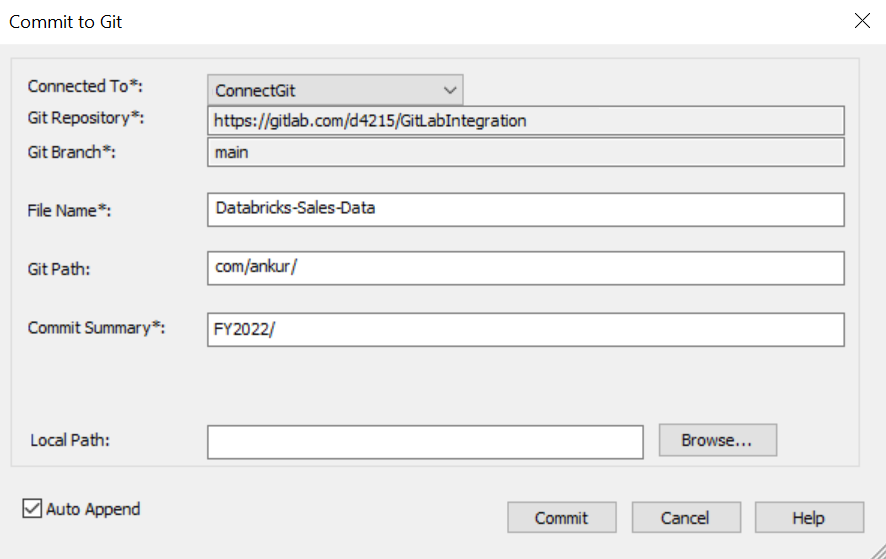

On the Commit to Git screen, enter appropriate values in the fields. Fields marked with an asterisk () are mandatory. Refer to the following table for field descriptions.

| Field Name | Description | Additional Information |
|---|---|---|
| Connected To | Specifies the connection that connects erwin DM to a Git repository | For example, ConnectGit. |
| Git Repository | Specifies the Git repository configured for Connection |
For example, https://gitlab.com/d4215/GitLabIntegration is set for the ConnectGit connection. This field autopopulates based on the repository configured in the Git Connection Manager. |
| Git Branch | Specifies the Git branch that was set for connection in the Git Connection Manager |
For example, main is set for the ConnectGit connection. This field autopopulates based on the repository configured in the Git Connection Manager. |
| File Name | Specifies the user-defined name of the FE script file being committed to a Git repository | For example, Databricks-Sales-Data.sql |
| Git Path | Specifies the location in the Git repository where the FE script is committed |
For example, FY2022/ The FE script is committed to the FY2022 folder inside the root folder of your Git repository. |
| Commit Summary | Specifies the summary of the push commit | For example, Append December Sales. |
| Local Path | Specifies the location on your local machine where the Alter script is saved | C:\Users\SO\Documents\Databricks |
| Auto Append | Specifies whether the alter script is appended to the file set in File Name and Git Path |
By default, the Auto Append check box is selected. To create a new script file, clear the Auto Append check box and set the File Name and File Path belonging to an existing file. A new file with the following naming convention: <File Name>_YYYY-MM-DD_HH-MM-SS is created. Ensure that you use this check box consistently every time you commit an alter script. |
The Auto Append check box is available only when you are committing an alter script.
For more information on committing FE scripts, refer to the Committing to Git Repositories topic.